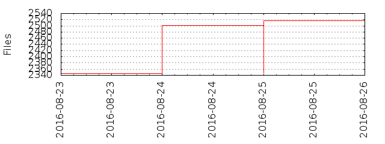

Files
- Total files
- 2346
- Total lines
- 298571
- Average file size
- 10322.81 bytes

| Extension | Files (%) | Lines (%) | Lines/file |
|---|
| 215 (9.16%) | 4739 (1.59%) | 22 |
| MIT | 1 (0.04%) | 21 (0.01%) | 21 |
| bat | 9 (0.38%) | 204 (0.07%) | 22 |
| bnf | 1 (0.04%) | 16 (0.01%) | 16 |
| bplist | 26 (1.11%) | 156 (0.05%) | 6 |
| c | 1 (0.04%) | 34 (0.01%) | 34 |
| cmd | 1 (0.04%) | 1 (0.00%) | 1 |
| coffee | 2 (0.09%) | 678 (0.23%) | 339 |
| cpp | 2 (0.09%) | 93 (0.03%) | 46 |
| cs | 2 (0.09%) | 134 (0.04%) | 67 |
| css | 78 (3.32%) | 27961 (9.36%) | 358 |
| dtd | 1 (0.04%) | 870 (0.29%) | 870 |
| eot | 9 (0.38%) | 801 (0.27%) | 89 |
| gnu | 1 (0.04%) | 174 (0.06%) | 174 |
| h | 41 (1.75%) | 1549 (0.52%) | 37 |
| html | 18 (0.77%) | 897 (0.30%) | 49 |
| idx | 1 (0.04%) | 139 (0.05%) | 139 |
| iml | 1 (0.04%) | 8 (0.00%) | 8 |
| java | 2 (0.09%) | 335 (0.11%) | 167 |
| jpg | 216 (9.21%) | 9882 (3.31%) | 45 |
| js | 1009 (43.01%) | 169324 (56.71%) | 167 |
| json | 146 (6.22%) | 37730 (12.64%) | 258 |
| m | 31 (1.32%) | 4747 (1.59%) | 153 |
| map | 1 (0.04%) | 0 (0.00%) | 0 |
| markdown | 1 (0.04%) | 62 (0.02%) | 62 |
| md | 234 (9.97%) | 32922 (11.03%) | 140 |
| otf | 18 (0.77%) | 30011 (10.05%) | 1667 |
| pack | 1 (0.04%) | 27496 (9.21%) | 27496 |
| pbxproj | 2 (0.09%) | 938 (0.31%) | 469 |
| pch | 2 (0.09%) | 48 (0.02%) | 24 |
| pegjs | 5 (0.21%) | 2242 (0.75%) | 448 |
| plist | 2 (0.09%) | 44 (0.01%) | 22 |
| png | 164 (6.99%) | 4362 (1.46%) | 26 |
| sample | 9 (0.38%) | 496 (0.17%) | 55 |
| sh | 2 (0.09%) | 36 (0.01%) | 18 |
| svg | 19 (0.81%) | 680 (0.23%) | 35 |
| tap | 1 (0.04%) | 39 (0.01%) | 39 |
| ttf | 9 (0.38%) | 801 (0.27%) | 89 |
| txt | 3 (0.13%) | 328 (0.11%) | 109 |
| webapp | 1 (0.04%) | 9 (0.00%) | 9 |
| woff | 9 (0.38%) | 261 (0.09%) | 29 |
| xcconfig | 4 (0.17%) | 98 (0.03%) | 24 |
| xib | 1 (0.04%) | 138 (0.05%) | 138 |
| xml | 27 (1.15%) | 10754 (3.60%) | 398 |
| yml | 17 (0.72%) | 166 (0.06%) | 9 |